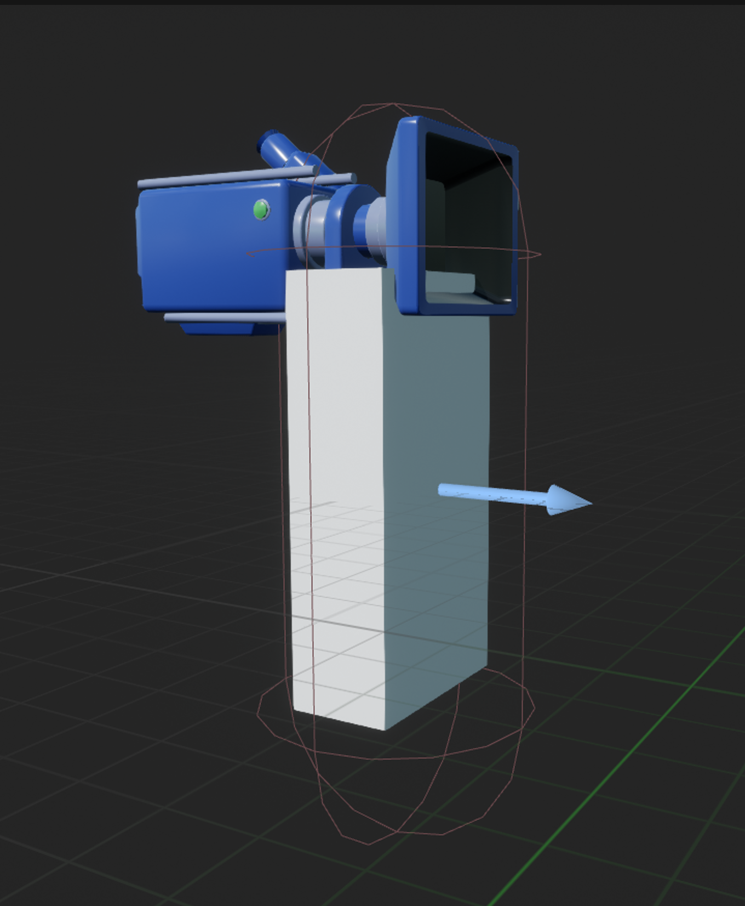
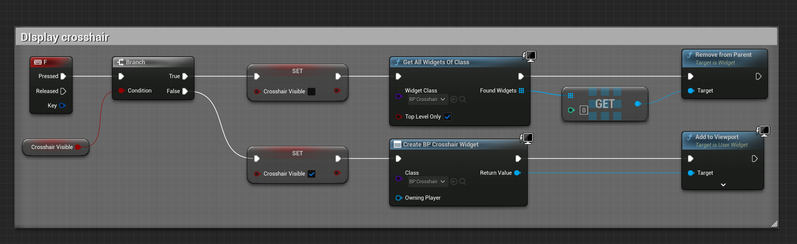
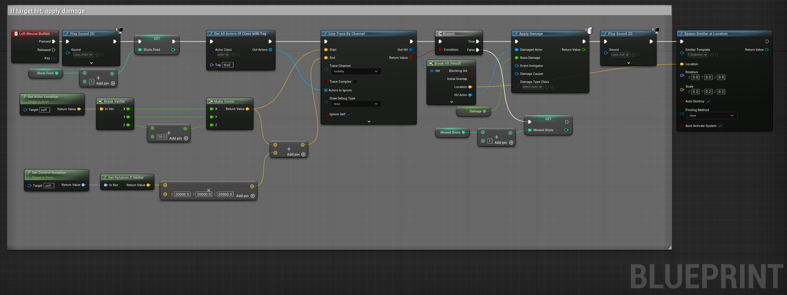
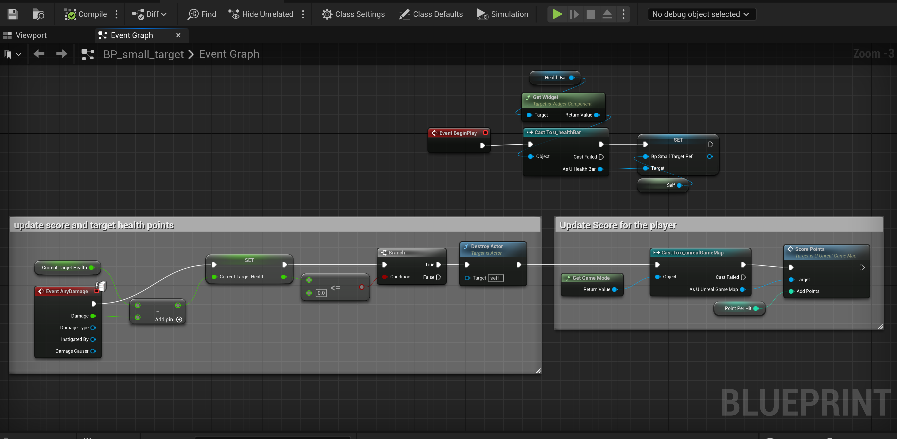
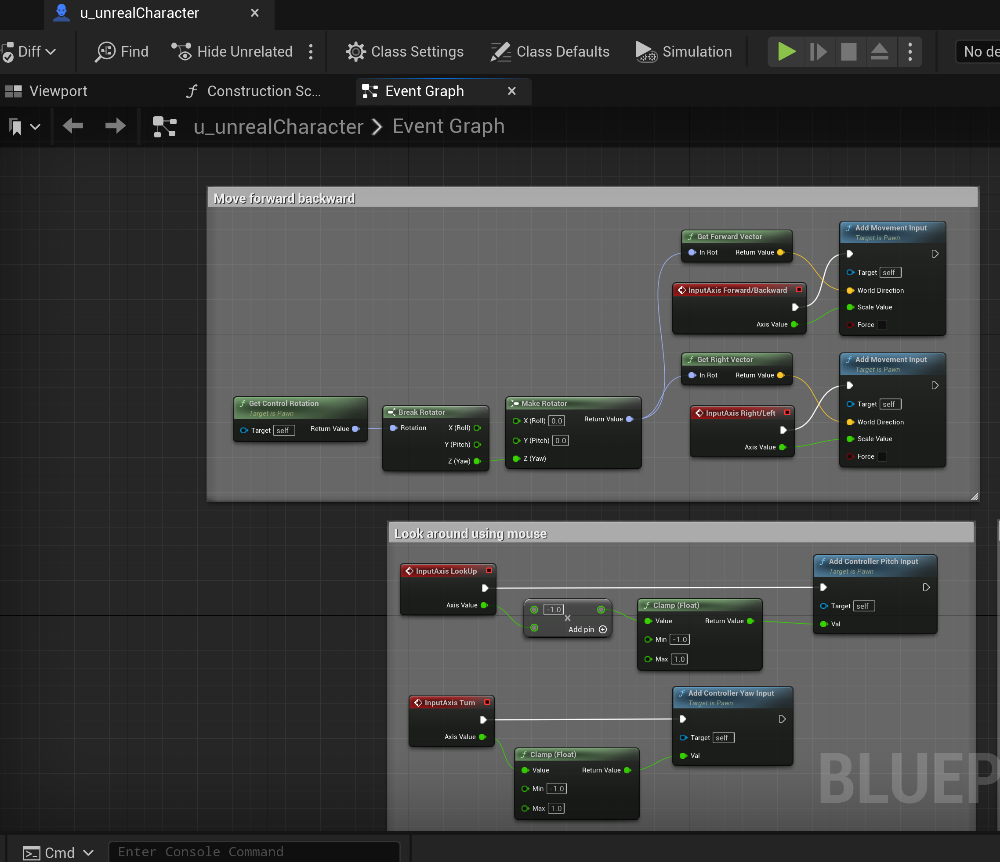
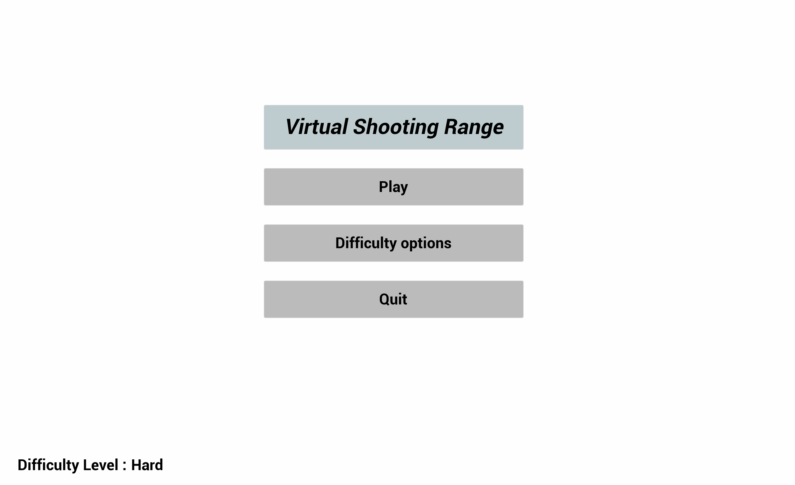
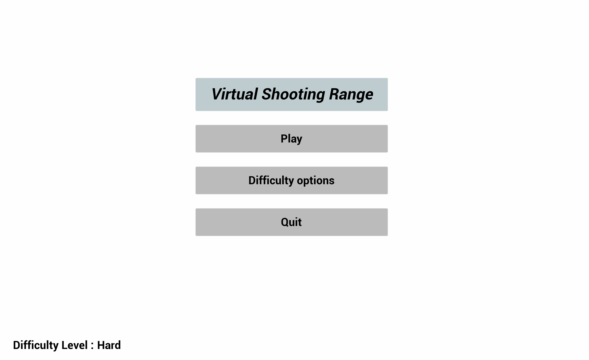
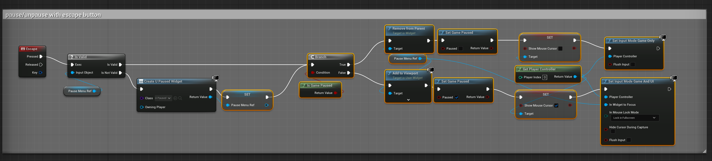
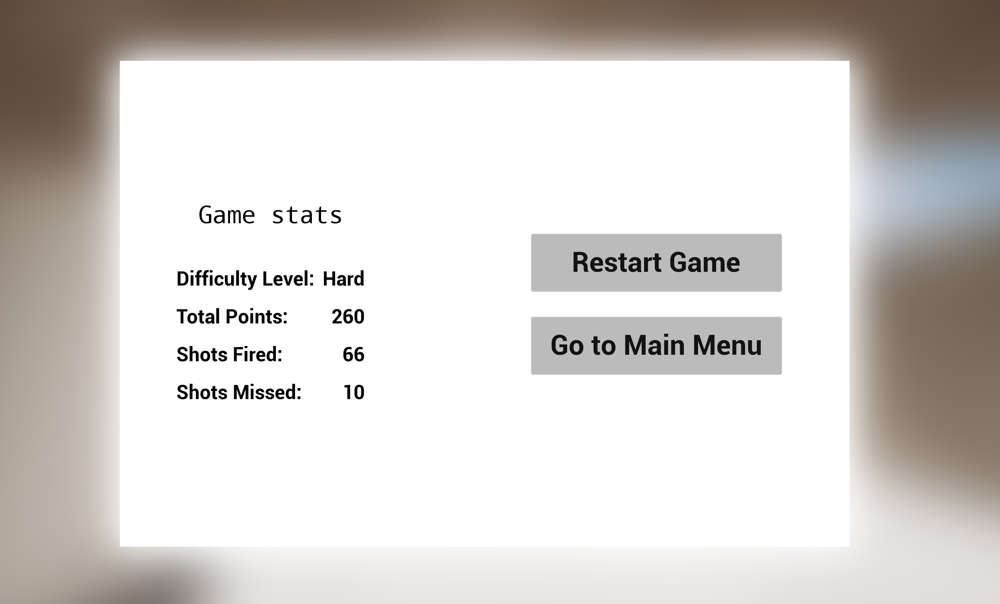

First person shooting range with Unreal Engine Blueprints
Are you ready to create an exciting first-person shooter game using Unreal Engine 5? With the power of Blueprints, you can design your game without ever touching a line of code. In this blog post, I will guide you through the process of creating a thrilling game that features a playable character who can move around the map and shoot at static and dynamic targets in a shooting range.
Getting Started
First, open Unreal Engine and start with an empty template. You can customize the look and feel of your character and gun by using existing assets or creating your own. For my project, I haven't used any weapon assets or character asset. I have just added a camera and box static mesh for the character.
Level Design
Next, create a new level and design your shooting range using the level editor. You can add different types of targets, such as small or big targets, and assign different scores to them. You can also set a timer for your game, making it more challenging for the player to complete.

Unreal Engine FPS Shooting Range Game Map
Blueprint Programming
Once your level is designed, it's time to create the logic for your game. This is where Blueprints come in. Blueprints are visual scripting tools that allow you to create gameplay mechanics without writing code. You can create new Blueprints by right-clicking in the Content Browser and selecting "Blueprint Class."
Shooting Mechanics
Target System
Character Movement
To add movement mechanics, create a new Blueprint for your character and add movement events such as forward, backward, left, and right. You can also add jumping, crouching, and sprinting mechanics to make the movement more dynamic.
User Interface
Finally, add a main menu and a pause menu to your game. This will allow the player to start a new game, continue playing, or quit the game. You can also add options to adjust the graphics, audio, and controls.
 

When I created main menu, I had a cinematic video created by sequencer. By mistake that video got deleted and I was not able to find it again. So, I have a sequencer that's just plain white screen. But, you can add a video to your main menu by adding a sequencer and adding a media player to it.
 Gameplay Demonstration
Congratulations! You have now created a thrilling first-person shooter game using Unreal Engine and Blueprints. With the power of Blueprints, you can easily modify and add new features to your game, making it even more exciting for the players.
If you have any questions or comments, please feel free to reach out to me through email or any other social media. I hope you enjoyed this blog post and found it helpful. Thank you for reading!